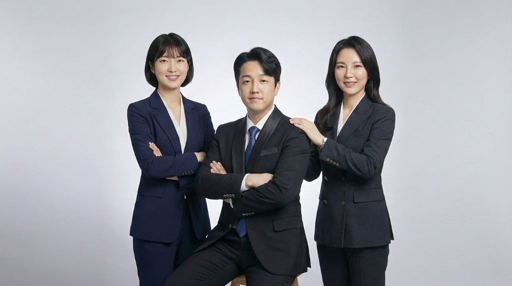

고객과 함께 성장하는 최고의 파트너, 유정노동법률사무소

안녕하세요, 고객과 함께 성장하는 유정노동법률사무소입니다. 저희 사무소는 급변하는 노동환경에 발맞추어 최고의 노무 솔루션을 제공하고 있습니다.
사업주의 입장에서 '경영이 더욱 편해지는 인사·노무관리'를 목표로, 복잡한 노동환경과 중대재해 위험으로부터 사업주가 안심하고 핵심 경영에 집중할 수 있도록 실질적인 노무관리를 전담해 드립니다.
동시에 근로자의 노동권익 보호를 위해 서울노동권익센터, 서울시 노동권리보호관, 국가인권위원회 등 공공기관에서의 자문·위원 활동을 통해 현장의 목소리를 끊임없이 듣고 반영합니다.
공인노무사로서의 전문성과 윤리의식을 바탕으로, 고객이 믿고 맡길 수 있는 파트너가 되겠습니다. 모든 사건을 최선을 다해 처리하며 투명하게 소통합니다.
대기업 인사실무 20년 이상의 현장경험과 공공기관 전문위원 활동을 통해 검증된 전문성을 제공합니다. 이론이 아닌 실전 솔루션을 드립니다.
끊임없이 변화하는 노동환경에 발맞추어 지속적으로 학습하고 성장합니다. 고객과 함께 성장하는 것이 저희의 가장 큰 목표입니다.
신혜경 노무사 서울노동권익센터 자문위원 · 노동상담위원 위촉
경영기술전략, 중대재해예방 특화 수행기관으로 선정
서울특별시 공식 배포 자료 집필 · 아파트 경비노동자의 권익 보호 및 고용안정을 위한 현장 실무 안내서 제작
근로복지공단 선정 전국 상위 30개소 선정 · 서울시의회 의장 표창장 수상
어린이집 중대재해 예방 및 대응 매뉴얼 집필 · 발간
직장어린이집 중대재해처벌법 대응 매뉴얼 공식 집필 · 발간
중소벤처기업부 K-비대면 서비스 플랫폼 공급기업 등록
서울시 발간 노동상담 서적 집필, 신혜경 노무사 합류 · 보험사무대행기관 등록
유상건 대표노무사 창립 · 노동분쟁, 산업재해 전문 사무소 개소 (2020년 7월)
2023년 전국 보험사무대행기관 중 상위 30개소 선정
노동권익 향상 및 사업장 노무관리 기여 표창
2021년 중소벤처기업부 비대면 서비스 공급기업 선정
2024년 경영기술전략 · 중대재해예방 특화기관 선정
중앙노동위원회 · 서울노동위원회 국선노무사 활동
서울관악지청 직장 내 괴롭힘 판단 전문위원 위촉